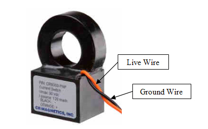

|
Home
| Profile
| Engineering Projects
| Designs
| Animations
|
STOVETOP COMMUNICATION DEVICE
|

The purpose of the current switch is to detect if the stove is turned on. One of the live wires of the stoves power cord is run through the opening of the current switch. The current switch detects the magnetic field around the live wire when there is current passing through it. The orange wire (live wire) is wired to the positive input of the USB module and the black wire (ground wire) is wired to the ground of the USB module. When current is running through the live wire of the stove’s power cord, a few milliamps runs through the orange wire and this signal is interpreted by the USB module to mean that the stove is turned on.
|
|